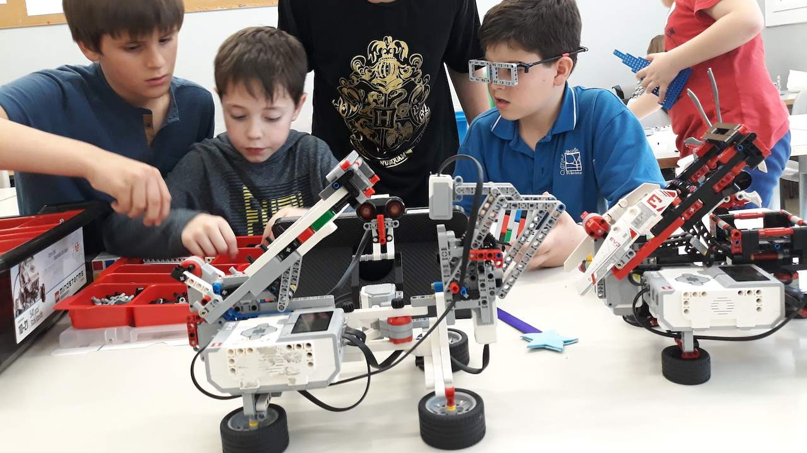
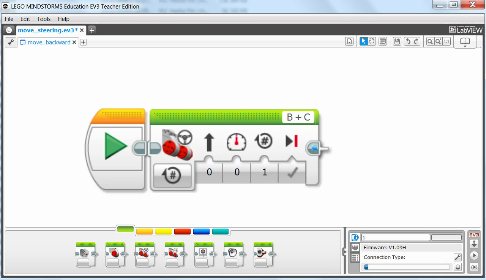
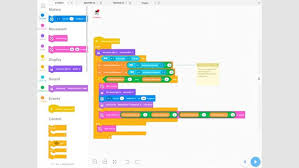
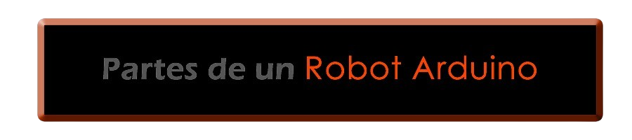
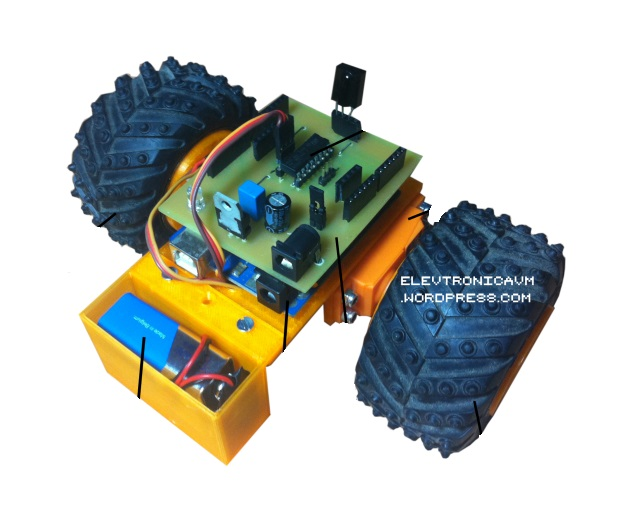

La robótica está teniendo un impacto significativo en la educación, transformando la forma en que los estudiantes aprenden y desarrollan habilidades clave en campos como la ciencia, la tecnología, la ingeniería y las matemáticas (STEM). Aquí hay algunos aspectos clave del impacto de la robótica en la educación:
La robótica proporciona a los estudiantes una experiencia práctica y tangible que complementa la instrucción teórica. Construir, programar y controlar robots les permite aplicar conceptos abstractos de STEM de una manera concreta y relevante. Esto ayuda a los estudiantes a internalizar mejor los conceptos y a desarrollar habilidades de resolución de problemas.

La implementación de este area en la educación promueve el desarrollo de una amplia gama de habilidades, incluyendo el pensamiento crítico, la creatividad, la colaboración y la comunicación. Los estudiantes deben trabajar en equipo para diseñar y construir robots, resolver problemas técnicos y programar el comportamiento del robot, lo que fomenta el trabajo en equipo y la colaboración.
A medida que la tecnología continúa avanzando, las habilidades en robótica y programación se vuelven cada vez más importantes en el mercado laboral. La educación en robótica prepara a los estudiantes para carreras en campos como la ingeniería, la informática, la robótica y la tecnología, donde la demanda de habilidades técnicas es alta y en constante crecimiento.
Lego Mindstorms
LEGO Mindstorms es un conjunto de robótica educativa que utiliza ladrillos LEGO programables para construir y programar robots. Estos kits suelen incluir motores, sensores y un "brick" central que actúa como el cerebro del robot.
Los kits de LEGO Mindstorms generalmente incluyen una variedad de componentes, como ladrillos LEGO, motores, sensores y un "brick" central que actúa como el cerebro del robot. Los usuarios pueden seguir instrucciones paso a paso para construir modelos prediseñados o utilizar su creatividad para diseñar sus propios robots personalizados.
Una de las características distintivas de Mindstorms es su capacidad para programar el comportamiento del robot utilizando un software de programación intuitivo y basado en bloques. Esto permite a los usuarios crear secuencias de comandos simples arrastrando y soltando bloques de código en una interfaz gráfica fácil de entender. Además, Mindstorms es compatible con lenguajes de programación más avanzados como Python, lo que brinda a los usuarios la flexibilidad de programar robots utilizando un enfoque más tradicional basado en texto.
Otra Caracteristica del Brick es la capacidad de producir una variedad de sonidos, que pueden ser utilizados para indicar eventos o condiciones específicas durante la programación del robot. Por ejemplo, un sonido podría indicar que se ha detectado un obstáculo, mientras que otro podría indicar que el robot ha completado una tarea con éxito. Esto proporciona una retroalimentación auditiva adicional que puede ayudar a los estudiantes a comprender el comportamiento y el funcionamiento de sus robots de manera más efectiva.
SoftWare Mindstorms
Basado en LabVIEW, este entorno de programación es utilizado en ingeniería para la automatización y el control de sistemas. Ofrece una programación gráfica con mayor profundidad y complejidad. Permite un control detallado del robot y sus componentes, soportando estructuras avanzadas como bucles, condiciones y variables complejas.

La interfaz es más técnica y requiere una comprensión más profunda de la programación y el control de sistemas. Este software es ideal para proyectos de robótica más avanzados y profesionales, ofreciendo una flexibilidad y potencia que los entornos más simples no pueden igualar. Además, puede interactuar con otros sistemas y software a través de interfaces estándar, siendo utilizado tanto en entornos educativos avanzados como en proyectos profesionales de robótica.

Scratch for LEGO Mindstorms EV3
Scratch es un lenguaje de programación visual que facilita la creación de programas mediante bloques de código. La extensión para LEGO Mindstorms EV3 permite controlar robots EV3 de manera sencilla. La interfaz es visual y amigable, ideal para niños y principiantes. Los bloques de código están predefinidos y categorizados por funciones como movimiento, sensores y control. Permite programar acciones básicas utilizando los sensores y motores del robot, y se usa ampliamente en escuelas para enseñar los principios básicos de programación y robótica.
Scratch es un lenguaje de programación visual orientado a la educación. Utiliza bloques de construcción visuales para crear programas, siendo ideal para niños y principiantes.
Robots Arduinos
Los Arduinos son una serie de microcontroladores de código abierto y placas de desarrollo que han ganado una gran popularidad en el mundo de la electrónica y la robótica debido a su versatilidad y accesibilidad. Aunque inicialmente fueron diseñados como herramientas para entusiastas y aficionados, su uso se ha extendido a la educación, la investigación y la industria debido a su potencial para crear una amplia variedad de proyectos.
Lo que hace que los Arduinos sean tan poderosos es su capacidad para interactuar con el mundo físico mediante la conexión de sensores, actuadores y otros dispositivos periféricos. Los usuarios pueden programar el Arduino utilizando un lenguaje de programación basado en C/C++, lo que les permite controlar el comportamiento del microcontrolador y crear aplicaciones personalizadas para una amplia gama de propósitos.
Uno de los aspectos más destacados de los Arduinos es su capacidad para manejar proyectos de gran complejidad. Aunque pueden ser utilizados para proyectos simples como encender y apagar luces o controlar motores, también son capaces de gestionar sistemas mucho más complejos que involucran múltiples sensores, actuadores y sistemas de retroalimentación.

Ejemplo - Robot Controlado por Infrarojos

Haz Clic en una parte especifica del robot para más información